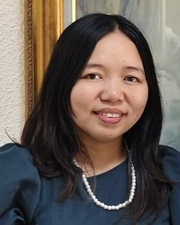

Anna Marie Abuan | WDD 130

My name is Anna Marie Abuan, and I am from the Philippines. I am happily married and a proud mother of four wonderful children, who remain my greatest source of inspiration and motivation in both my personal and professional life. Currently, I work as an Office Secretary at the Department of Education (DepEd), where I provide administrative support and assist in ensuring the smooth and efficient daily operations of the office. In my role, I value organization, accuracy, and professionalism, and I take pride in being dependable and service-oriented, especially in a work environment committed to public service and education. I am dedicated to my work and continuously strive to improve my skills in office management, communication, and coordination. Balancing my career and family life has helped me develop strong time-management skills, patience, and a strong sense of responsibility. I believe in hard work, integrity, and lifelong learning, and I aim to contribute positively both in my workplace and in my community.